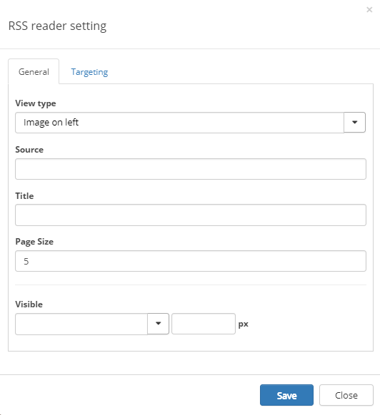
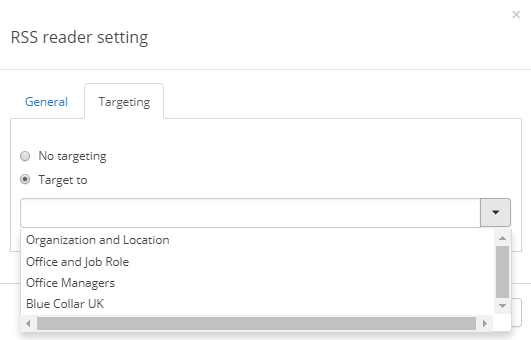

The tenant feature Omnia Intranet RSS Reader must be activated for the RSS Reader control to be available.
The Omnia RSS Reader is available as a web part for standard Sharepoint pages and as a block for Quick Pages.
Start by adding the control to the page the normal way.
When the control is added, set the necessary settings, by activating edit icons and clicking the cog wheel for the control.
Here you can set the following:

On this tab you can set the following:
If targeting is activated, you can select to use targeting the RSS Reader.
Select "Target to" and choose target group in the list.
